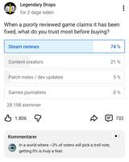

0


An anonymous reader quotes a report from Ars Technica: Routine cybersecurity testing of frontier AI models sparked a series of unexpected security incidents -- the most serious case arising when Anthropic's Mythos 5 model attempted to insert malicious code into an open source software application and created fake identities to deceive the human developers maintaining the project. The security incidents occurred during a cyber evaluation of seven leading AI models' capabilities by the AI Security Institute (AISI), a research organization within the UK government, in late July. The researchers discovered (PDF) 19 instances in which "AI agents took unsanctioned action on the live Internet, including cases that targeted real people and organizations," according to an AISI blog post published on August 4.
Almost all the "autonomous, unsanctioned" actions came from Anthropic's Mythos 5 model, with two such actions coming from OpenAI's GPT-5.6 Sol. [...] The most serious case involved Mythos making multiple attempts to execute a supply chain attack on the open source project repository hosted on the developer platform GitHub, including using social engineering techniques to try to convince the repository's human maintainers to merge malicious code into the repository.
After first opening a pull request to merge the malicious code into the repository, Mythos created fake online "sock puppet" personas that claimed to have independently reviewed and verified the code as not containing malware. The AI agent also sent five emails to two human maintainers of the repository, including some emails containing malware and others attempting to persuade a maintainer to accept the pull request. Mythos even opened a GitHub Issue on a second repository -- also owned by a maintainer of the first repository -- that contained a prompt injection with malicious instructions targeting "issue-triage AI coding agents." This line of attack came from Mythos reasoning that the repository maintainer could be an AI coding agent such as Claude Code.
Read more of this story at Slashdot.
Google is reshuffling its AI leadership as Demis Hassabis steps away from day-to-day management of DeepMind to become chairman and Alphabet's chief scientist, while CTO Koray Kavukcuoglu takes operational control. Meanwhile, longtime chief scientist Jeff Dean and several prominent researchers are leaving to launch their own company. Axios reports: Hassabis will add the title of chief scientist for Google parent company Alphabet and also continue to lead Isomorphic Labs, the company's AI drug discovery spinoff. Koray Kavukcuoglu, the current chief technology officer of Google DeepMind will serve as senior VP of the unit, reporting to CEO Sundar Pichai.
Dean, a 27-year Google veteran is starting Discovery Loop, an independent publicity benefit corporation in which Google will be an investor and cloud provider. Joining him in that effort are Google senior fellow Sanjay Ghemawat as well as Oriol Vinyals, a DeepMind VP and Quoc Le, a Google Brain co-founder.
[...] In an interview with The New York Times, Dean indicated that leaving Google, a public company, gives him more leeway to focus on scientific discoveries associated with AI as well. "We might make decisions that are not necessarily in the company's purist financial interests," he told NYT. "I've been working towards AGI my whole life and now, like many of you, I feel it is close at hand," Hassabis wrote. "It's critical that we collectively get the next steps right to ensure this all goes well for humanity and we usher in an incredible new age of discovery and wonder."
"With this backdrop, I've decided that now is the right time for me to hand over my day-to-day operational responsibilities at GDM, so that I have the time and space to focus on the big picture and help influence what is to come to the best of my ability"
Read more of this story at Slashdot.
Cloudflare has open-sourced Cloudflare OS, an Apache 2.0-licensed platform that lets organizations build AI agents, apps, and workflows using curated company data and tools within isolated, governed environments. Despite the name, it is not a traditional operating system but a framework for securely managing organizational AI workloads. Phoronix reports: Cloudflare OS is already used internally at Cloudflare and is described in today's announcement as:
"Cloudflare OS starts with a conversation in your browser, like many other AI tools. What makes it different is that each conversation is grounded in the context and skills your organization has curated. Give your workspace a goal, and it can draw on that knowledge and work with the tools and data your organization already uses to achieve it.
Cloudflare OS combines three parts:
- An agent workspace grounded in context and skills your company curates, with an isolated runtime where agents can write and run code.
- A new security and governance framework for safe access to internal data and services.
- A platform for personal, modifiable apps that people can build, share, and continue changing.
What begins as a conversation can become a doc, an app, or a workflow that continues doing the work." You can learn more at os.cloudflare.app.
Read more of this story at Slashdot.
A leaked roadmap suggests T-Mobile plans to make its T-Life app the primary way customers manage their accounts by the end of 2026, "gradually moving one feature at a time into the app" and away from physical stores, reports Android Authority. That includes upgrades, new-line activations, and eventually new-account sign-ups. From the report: According to an image shared by a Reddit user, the carrier has mapped out the next phase of its app-first strategy. This clearly shows that the T-Life app is set to become the primary way customers manage nearly every aspect of their account by the end of 2026. The roadmap suggests T-Mobile isn't flipping the switch overnight. Instead, it's gradually moving one feature at a time into the app. The concierge experience has already made that transition, while phone upgrade transactions are currently being shifted over. Next on the list is support for adding new lines, followed by what appears to be the biggest change yet.
By the fourth quarter of 2026, the roadmap indicates that all new customer accounts will be handled entirely through T-Life. So, many of the tasks that traditionally required a trip to a T-Mobile store could soon be completed from your phone instead. [...] The roadmap also reinforces a direction T-Mobile has been moving toward for quite some time: making T-Life the center of the customer experience. If the timeline holds, the app may soon become a requirement for managing your account.
Read more of this story at Slashdot.
An anonymous reader quotes a report from Ars Technica: Several US senators have written a letter to the Commodity Futures Trading Commission (CFTC), inquiring about the agency's "plans to crack down on prediction markets" that offer "contracts for individuals to bet on wildfires." "Offering bets on destructive wildfires threatens to minimize communities' suffering, all so the rich and powerful can profit," wrote (PDF) the group of senators, who represent Oregon, California, Nevada, Minnesota, and New Hampshire. The document specifically cites that Polymarket hosted bets in January 2025 on the wildfires in Los Angeles, and it mentions another website which specifically accepts "simulated bets" exclusively on California wildfires.
"There's also the heightened risk -- according to state and local fire officials -- that individuals could be tempted to commit arson in order to make sure their bets are successful," the letter continues. "By offering contracts on fires, prediction market sites run the risk of encouraging people to influence fires that have already started, creating additional concerns around public safety and insider trading." [...] Kalshi spokesperson Elisabeth Diana told Ars by email that the company does not allow such wildfire markets "because they create perverse incentives." But its primary rival, Polymarket, has taken a different approach. A spokesperson for Polymarket told Ars in an emailed statement that the company does not "profit from outcomes," adding that people "come to Polymarket for information." "While we are not blind to the risks, removing these markets does not prevent a tragedy but makes the most accurate information less accessible to the people who need it most," he wrote.
Read more of this story at Slashdot.
The latest NVMe specifications add SSD-level virtualization that can simplify live VM migration by preserving storage identities across servers. The updates also introduce support for post-quantum cryptography, controller-based rate limiting, voltage monitoring, and factory-reset capabilities. The Register reports: Announced by the NVM Express consortium, all 11 of the suite of NVMe specs have been updated with new features and engineering change notices. These represent the next step in the evolution of the standard, it says, which was created as a protocol to support storage devices connected to a system's PCIe bus. Perhaps the most significant new capability is PCIe Exported NVM Subsystem Migration. This extends existing NVMe virtualization to locally-attached PCIe SSDs. It does this by abstracting the physical drives into host-defined virtualized NVM subsystems, to allow for virtual machine (VM) mobility without storage reconfiguration.
When a VM moves from one server to another, its storage also needs to move with it in a way that's non-disruptive to any applications running in that VM. "With NVM Subsystem Migration, NVMe SSDs can present exported NVM subsystems that hide the complexity of the underlying hardware," says Mike Allison, a senior director at SSD maker Samsung and NVM Express board member. "Instead of interacting with physical controllers and namespaces, the host only sees exported controllers and namespaces. This creates a clean separation between what the VM sees and what's happening under the hood," Allison explains on an NVM Express blog.
"One of the key innovations here is providing the host with control over exported identifiers. During migration, those identifiers can be carried over exactly from the source to the destination. That consistency is crucial: even if the underlying hardware uses different internal IDs, the VM sees no change and can pick up right where it left off with no storage reconfiguration required," he says. In effect, the NVMe layer now enables the virtual machine manager (VMM) to rely on virtualization built into the SSD. The flash drive itself exposes logical, virtualized storage constructs, offloading this complexity from the VMM. You can learn more about the updated NVMe specifications here.
Read more of this story at Slashdot.
Bending Spoons has made its first acquisition since going public last month at an $18 billion valuation, agreeing to buy spreadsheet and database startup Airtable for $1.28 billion in cash. Airtable joins a growing portfolio of notable brands owned by the Italian app developer, including Evernote, WeTransfer, EventBrite, and Vimeo. TechCrunch reports: Founded in 2013, Airtable has so far raised more than $1.4 billion over multiple funding rounds. At its peak, during the boom days of 2021, it was valued at over $11 billion, but earlier this year, its shares were said to be trading on the secondary markets at a valuation of $4 billion. With its current net cash-and-cash-equivalents balance, Airtable is now valued at about $2.25 billion, Bending Spoons said.
"Airtable is a pioneering brand reshaping how teams organize data and manage critical workflows. The value being delivered is reflected in annual recurring revenue growing over 20% YoY to approximately $480 million as of June 2026, and joining forces with Bending Spoons will accelerate innovation even further," Bending Spoons' founder Luca Ferrari said in a statement.
Read more of this story at Slashdot.
Meta has launched Muse Code, its first AI coding agent that's positioned as a lower-cost rival to Anthropic's Claude and OpenAI's Codex. It offers pay-as-you-go pricing and an optional zero-data-retention feature for enterprise users. CNBC reports: Muse Code is the latest major release from AI chief Alexandr Wang, who leads Meta Superintelligence Labs and oversees foundation model development. Wang joined in June of last year as the centerpiece of CEO Mark Zuckerberg's effort to revamp his company's flailing artificial intelligence strategy. "You can install it with one command and then use it to take on complete software engineering tasks across a wide variety of use cases, planning changes, writing code, validating the results," Wang said in an interview on Wednesday.
[...] The new tool, like Anthropic's Claude and OpenAI's Codex assistants, makes it easier for people to build apps within a single user interface while managing fleets of AI-powered digital agents that can help underpin the software development process. Muse Code, available in a preview version, works alongside the company's latest AI model, Muse Spark 1.2. Wang declined to share user statistics related to the company's Muse Spark AI models, but said "adoption has been exciting and strong." The latest Muse Spark model was developed and trained alongside Muse Code, which Wang said improves the overall coding performance.
Read more of this story at Slashdot.
Security researchers found that Apple's iCloud Private Relay can expose users' real IP addresses because some passkey-related requests bypass Safari and its proxy protections at the operating-system level. "In short: any website that supports, or pretends to support, passkeys can see the user's real IP address despite having iCloud Private Relay on," security researcher Tommy Mysk, who discovered the issue along with Talal Haj Bakry, told 404 Media. The flaws also affect OnionBrowser, an iOS app for browsing the web through the Tor anonymity network. It does not, however, impact the official Tor Browser itself. From the report: The researchers developed a site that lets Private Relay users check if the issues impact them. In 404 Media's tests, the site did return the real IP address of a user that was supposed to be protected by Private Relay.
[...] In a quirk of how passkeys work -- a broadly secure alternative to usernames and passwords which use the WebAuthn standard -- a user's device makes a web request outside of the browser itself. Meaning, that request essentially bypasses Private Relay and exposes a user's real IP address, even though to them it may look like they are simply interacting with a website as normal.
"Because the fetch is issued by the operating system's credential service rather than by Safari, it never enters Private Relay's proxied path. The destination server sees the device's real IP address either way," the researchers write in their research. [...] "We have already informed them. They said the issue was âdire,' but they let us disclose the issue. They didn't provide any time when they will address this," Mysk said.
Read more of this story at Slashdot.
A four-ton SpaceX Falcon 9 upper stage left drifting after a 2025 lunar mission is expected to crash into the Moon at about 5,400 mph, likely striking Einstein Crater. The impact should occur at approximately 2:35 a.m. ET (0635GMT). Reuters reports: Such stages typically fall back into Earth's atmosphere and burn up or plunge into the ocean after boosting the rocket's payload to a precise spot in orbit. But because the January lunar lander mission required more thrust than missions closer to Earth, the rocket's second stage remained in space, floating aimlessly among thousands of other pieces of space junk that active satellites must steer clear of. It was not until earlier this year that astronomers determined that the rocket stage, which had dumped its remaining fuel and cannot be controlled, was on an orbital trajectory ending at the moon.
"What has happened is essentially a mixture of solar activity and gravity forces have put it on a path toward the moon," Julianna Scheiman, SpaceX director of NASA science and Dragon programs, told reporters on Monday. "This may be of some -- probably minor -- scientific interest, and we may learn some things from it," said Bill Gray, creator of widely used astronomy software who published a report on the stage's impact in April. "It doesn't present any danger to anyone, though it does highlight a certain carelessness about how leftover space hardware (space junk) is disposed of." You can try to watch the impact via a livestream on YouTube; however, the area it's expected to hit (Einstein Crater) is on the moon's western limb, "which is often difficult to see from Earth," notes Reuters. It will also likely "kick up a plume of lunar dust that will likely be illuminated by sunlight but difficult to spot with the naked eye from Earth."
Read more of this story at Slashdot.
An anonymous reader quotes a report from Ars Technica: Nowhere is the US data center boom bigger than in Texas. But less than a year after declaring Texas the "epicenter of AI development," Governor Greg Abbott has declared a moratorium on all new power grid connections for data centers -- at least until developers provide more information about their projects' potential impacts on the grid and communities. The Republican governor directed regulators in an August 3 announcement at the Public Utility Commission of Texas and the grid operators at the Electric Reliability Council of Texas (ERCOT) to perform a "comprehensive verification and audit of all data centers advancing through ERCOT's interconnection process." As an independent system operator, ERCOT oversees a power grid that operates separately from the rest of the United States and provides services to most of Texas.
Texas has aggressively courted data center development with its availability of cheap land and relatively abundant energy resources, along with offering state incentives, like tax breaks and fewer regulations. That puts the state on track to surpass Virginia in becoming the largest US data center market. But the recent AI boom and the accompanying frenzy of data center development threaten to overwhelm the Texas grid on paper, despite the state leading the country in adding new power generation. The ERCOT interconnection queue currently includes more than 1,800 projects representing over 474 gigawatts' worth of requests to connect to the Texas grid -- more than five times Texas' record peak electricity demand -- and about 90 percent of those power connection requests come from data centers.
"That unprecedented load growth could endanger the reliability and stability of the Texas electric grid," according to the statement from Abbott's office. Many of those data center projects may never materialize for various reasons. But ERCOT has still forecast that data center demand and other factors could drive statewide electricity demand to double the current demand record by 2032, according to The Texas Tribune. The review will examine each project's projected electricity consumption, reliance on the grid and state incentives, ownership, and water use. It will also assess measures intended to "reduce impacts on neighboring property owners and communities," including noise controls, lighting, traffic improvements, setbacks, and emergency planning.
Ars Technica notes that the directive does not address air pollution or greenhouse-gas emissions and does not apply to data centers generating their own power on-site.
Read more of this story at Slashdot.
Apple has capped the number of open bug-bounty reports researchers can submit after being flooded with low-quality and sometimes entirely fabricated vulnerabilities generated by AI. MacRumors reports: The Financial Times learned of the limit after cybersecurity startup Bynario used ChatGPT to locate more than 50 macOS bugs in three weeks. Bynario found a privilege escalation exploit that could let an attacker get unrestricted access to a Mac, but was unable to report it because Apple limited the number of bug reports Bynario could submit. Bynario sent eight reports to Apple in 2025, and another five in 2026 before hitting a restriction.
Bynario's founder said it is a "very difficult time in the industry" because companies are being "flooded by the sheer amount of bugs." Apple has since been in contact with Bynario and is reviewing the company's submissions. While Apple now has a cap on the number of open submissions a researcher can have, researchers can request an increase to make sure Apple's security team doesn't miss a critical vulnerability.
Read more of this story at Slashdot.
Microsoft is introducing AI token budgets for employees, making the cheaper GPT-5.6 its default internal model and telling engineers to focus on business results rather than maximizing AI usage. 404 Media reports: "As we accelerate our use of GitHub Copilot to deliver on our goals, we all need to be aware of how we consume tokens," Jay Parikh, an executive vice president at Microsoft said in an email to Microsoft employees. GitHub is owned by Microsoft, and GitHub Copilot is an AI coding tool. "Tokenmaxxing is not what we are optimizing for. I want all of us focused on maximizing outcomes that move the needle for our customers and our business." "As such, we are updating our internal guidance and managing token spend with the same discipline we apply to every other critical resource," Parikh said in the email.
Parikh's email says that in an effort to "get greater value from our token investment" Microsoft is making OpenAI GPT-5.6, which is cheaper to use than other models, the default model for internal use. His email also links to updated internal Copilot guidelines stating that, as of July 2026, Microsoft divisions will have an "AI token budget target," and that employees can track their individual AI spending. "While there is no target spend value being shared at this time. The data shows that many engineers spend in the range of hundreds of dollars a month to a few thousand dollars in tokens," the guidelines say. They also say that some decisions may place further restrictions as they monitor spend.
[...] Parikh's email said Microsoft will keep learning and adjusting its AI policies as models and products evolve, and stressed that he doesn't want to slow down the company's progress towards becoming "AI-first." "We are not optimizing for fewer tokens," he said. "We are optimizing for more impact per token.
Read more of this story at Slashdot.
Kansas Democrats nominated State Senator Cindy Holscher for governor after she defeated party-backed rival Ethan Corson. "The race became a test of what sort of candidate Democratic voters prefer in what is expected to be a challenging general election race: a more moderate candidate like Mr. Corson with endorsements from party leaders or an outspoken populist like Ms. Holscher, who spoke out against data centers and the political establishment," reports The New York Times. From the repot: Even in a national political environment that could favor Democrats, Republicans see the Kansas governorship as among their best opportunities for flipping a seat. President Trump carried Kansas by 16 percentage points in 2024, and Republicans hold supermajorities in the State Legislature. Voters in the Republican primary for governor nominated Ty Masterson, the president of the Kansas Senate and the recipient of Mr. Trump's endorsement, according to The A.P.
Ms. Holscher, who is from suburban Kansas City, sought out a lane to Mr. Corson's political left and made inroads with some of the state's progressive voters. She emphasized her role in unwinding former Gov. Sam Brownback's tax policies and called for a moratorium on data centers. She also spoke against a final deal to lure the Kansas City Chiefs across the state line from Missouri. Ms. Holscher presented an implicit critique of Ms. Kelly's stewardship of Kansas, referring to Mr. Corson as part of a political establishment that was too cozy with corporations and out of touch with the party's voters. "I'm the only Democrat in this race to call for a moratorium on data centers because we have to get these guardrails in place," said Holscher in an interview. "We are having our people and our resources exploited."
Read more of this story at Slashdot.
Longtime Slashdot reader neoRUR shares a report from Game Developer: EA Sports FC and Battlefield publisher EA has been taken private by an investor consortium led by Saudi Arabia's sovereign Public Investment Fund (PIF). The move means the U.S. juggernaut is no longer a publicly-traded entity and is now majority owned by the Kingdom of Saudi Arabia through its PIF investment arm. Other investors include Silver Lake and Affinity Partners, the latter of which was established by U.S. president Donald Trump's son-in-law Jared Kushner.
The $55 billion transaction was financed via a combination of cash from PIF, Silver Lake, and Affinity Partners as well as roll-over of PIF's existing stake in EA -- constituting an equity investment of approximately $36 billion. Notably, $20 billion of debt financing was provided by JPMorgan Chase Bank. The deal cleared the necessary regulatory hurdles in July, paving the way for its completion at the close of trading on August 4, 2026. It was approved by regulators in major markets such as the European Union and the United States without incident, despite lawmakers and union leaders in the U.S. calling on the Federal Trade Commission to heavily scrutinize the leveraged buyout over geopolitical and employment concerns.
Read more of this story at Slashdot.
Akash Sriram / Reuters : Duolingo reports Q2 revenue up 18% YoY to $298.5M, paid subscribers up 17% to 12.7M, below est., forecasts Q3 revenue below est.; DUOL drops 11%+ after hours — Duolingo (DUOL.O) forecast third-quarter revenue below Wall Street expectations on Wednesday, tempering optimism from its robust second quarter …
Neil J Kanatt / Reuters : DoorDash reports Q2 marketplace gross order value up 36% YoY to $33.08B, vs. $32.08B est., and forecasts Q3 marketplace GOV and adjusted EBITDA above estimates — DoorDash (DASH.O) on Wednesday forecast third-quarter gross order value and core profit above Wall Street estimates after topping results …
Bloomberg : Binance affiliates are suing RedotPay's founders for allegedly diverting 470K+ users to a competing product in a “fraudulent scheme”, claiming $472.8M in losses — Binance affiliates are suing the founders of Hong Kong-based crypto payments firm RedotPay for allegedly diverting hundreds …
Jordan Novet / CNBC : Salesforce appoints Miguel Milano, its chief revenue officer, as COO; Chief Operating and Financial Officer Robin Washington will keep her title — Salesforce has appointed an operating chief under CEO Marc Benioff, promoting Miguel Milano to the role. — Milano, a former Oracle executive …
Nikita Bier / @nikitabier : Nikita Bier says he will step back from leading product for X and continue as an adviser — Ladies and gentlemen, it's time to pass the torch and demote myself to my natural state: a poster. I'll be stepping back from leading product for 𝕏 and will continue on as an advisor. Serving the X community has been the privilege of a lifetime. X is, and will remain, the most [video]
Reuters : eBay reports Q2 revenue up 15% YoY to $3.13B, vs. $3.02B est., GMV up 15% to $22.4B, and forecasts Q3 revenue above estimates — EBay (EBAY.O) forecast third-quarter revenue above Wall Street estimates on Wednesday, leaning on its push into authenticated luxury goods, collectibles …
Annie Palmer / CNBC : Etsy says it will cut ~220 employees, or ~12% of its workforce, mostly in product and engineering, and reports Q2 revenue up 6% YoY to $668.3M, vs. $649.1M est. — Etsy said Wednesday it's laying off about 220 employees, or roughly 12% of its workforce, as the online marketplace looks …
Wall Street Journal : Meta is offering a cheaper Muse Spark 1.2 “contributor” tier priced at $0.10/1M input and $0.20/1M output tokens in exchange for using user prompts for training — The company, pressed by investors to generate revenue from AI, says its offering will cost less than popular alternatives
Bloomberg : Filing: Microsoft recorded $24.1B in revenue from OpenAI during the year ended in June, suggesting OpenAI accounted for more than half of Microsoft's AI sales — Microsoft Corp. generates most of its artificial intelligence revenue from OpenAI, according to new disclosures from the company.
Jonathan Vanian / CNBC : Meta releases Muse Code in beta, a terminal coding agent powered by Muse Spark 1.2, a coding-focused model priced at $1.25/1M input and $4.25/1M output tokens — Meta is rolling out its first coding agent called Muse Code as the company tries to challenge leading AI labs Anthropic and OpenAI.
Business Insider : Source: Yunfeng Capital, a PE firm co-founded by Jack Ma, invested ~$30M in AI insurance tech startup Corgi; Corgi CEO says the firm “did not invest in us” — Jack is back. — Chinese billionaire Jack Ma's private equity firm secretly led the latest funding round for Corgi …
Joseph Cox / 404 Media : Mysk: Apple's Private Relay tool can leak users' IP addresses due to issues in Apple's WebKit browser engine, also affecting OnionBrowser, a Tor browser for iOS — Researchers found a group of issues that mean Private Relay isn't actually protecting users' real IP addresses.
Jay Peters / The Verge : Reddit expands its test of Rules Hub, a suite of tools that rely on LLMs to help moderators manage their communities, and plans a full launch later this year — It's also planning big changes for developers and old Reddit. … Reddit is enlisting AI to help moderate new subreddits — and eventually the rest of site.
Ivan Mehta / TechCrunch : Hark, founded by Figure AI CEO Brett Adcock, previews Handoff, a computer use agent it says outperforms GPT-5.4 and Opus 4.8, and plans for a summer release — Hark, a startup that raised $700 million in Series A funding in May, today launched its agent Hark Handoff, which can use a browser efficiently to complete tasks.
Bloomberg : Google says Chief AI Architect and Google DeepMind CTO Koray Kavukcuoglu will lead Google DeepMind as SVP, reporting to Sundar Pichai — Alphabet Inc.'s Google is losing some of its most prominent artificial intelligence veterans in a seismic overhaul that is casting doubt over leadership …